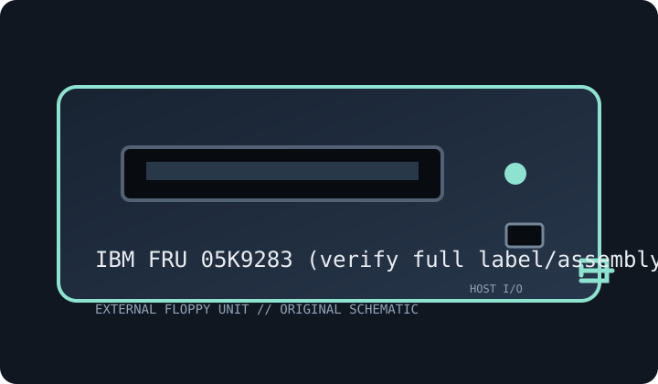

[ FLOPPY DRIVES // IDENTIFIED EXTERNAL MODEL ]
IBM 05K9283 USB Portable Diskette Drive
Model-specific archive record. Enclosure labels do not always identify the installed mechanism or host controller; preserve the full suffix and inspect the unit before connection or service.

MODEL IDENTIFICATION: IBM FRU 05K9283 (verify full label/assembly number). Photograph the nameplate, serial, connector and power rating. Verify revision-specific instructions and inspect any replacement mechanism before use.
Recorded specifications
| Exact model | IBM FRU 05K9283 (verify full label/assembly number) |
|---|---|
| Drive size / type | 3.5-inch external floppy drive. |
| Capacity / formats | 1.44 MB high-density and 720 KB double-density PC formats; legacy USB driver support is OS-specific. |
| Interface / controller | USB floppy device with embedded bridge/controller; no raw flux or direct controller-register access. |
| Power | USB bus-powered; use a host port with stable power and preserve the listed cable/adapter. |
| Host OS / system compatibility | ThinkPad and other USB PCs with a compatible device driver; boot depends on host firmware. IBM Windows 98 driver is archived. |
| Cable / connectors | USB lead from drive to host; not compatible with an internal 34-pin ribbon. |
Compatibility and preservation caveats
FRU identifies a service assembly and replacement units may contain different OEM mechanisms. Preserve labels and test with expendable media.
Inspect for corrosion, contamination, cracked plastics, damaged shutter, cable strain and prior repairs. Do not insert damaged media. Record host, OS, controller/driver, drive label, revision, media condition and acquisition settings. Preserve original images and document conversions separately.
Manufacturer manuals & archive references
- IBM USB Portable Diskette Drive — Windows 98 Device Driver v2.0 (Internet Archive)Archived IBM driver for portable diskette-drive family; verify FRU and OS applicability.
- IBM SupportManufacturer support portal; search FRU 05K9283 and host model.
Sources are described by scope; a support portal or related-family manual does not establish every model-specific rating. Prefer a complete matching manual and unit label over family-level assumptions.